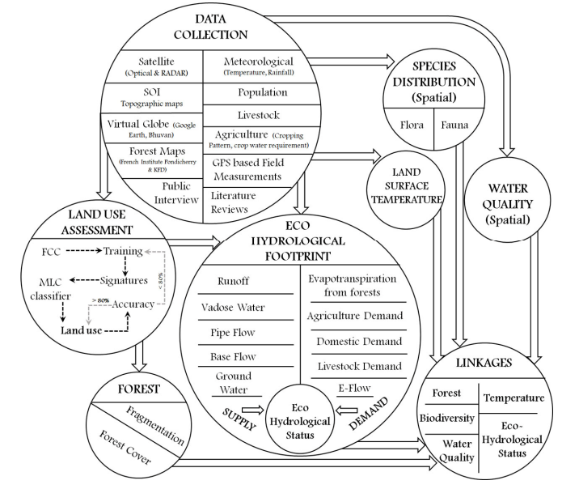

|
Data & Methodology

The above picture is Figure 2 which describes the method adopted for assessing the role of landscape dynamics with the ecological, hydrological and social dimensions in lotic ecosystems. This involved (i) assessment of spatio-temporal patterns of land cover using multi-resolution remote sensing data, (ii) assessment of eco-hydrological footprint through the analyses of the rainfall patterns, hydrologic regime with the demand of biotic components.
⦁ Data Collection: Optical Satellite data from Landsat 1 MSS (1973), Landsat 8 OLI (2018) and Topographic data from SRTM were downloaded from the USGS37. GPS based field observations, Survey of India Topographic Maps36,38, French Institute Maps39, virtual earth data such as Google Earth40, NRSC Bhuvan41 were used to geo-rectify (corrections for geometric shifts) and classify the Remote Sensing data to land use categories. Long term meteorological data such as temperature, rainfall, solar radiation were collected from the KSNDMC Karnataka42, Directorate of Economics and Statistics Karnataka43, India Meteorological Department44, Food and Agriculture Organisation45. Population census for the year 2011 and 2001 were collected from the Census of India 34. Livestock data such as Census, water requirement were collected from Directorate of Economics and Statistics 43, District at a Glance 46, and through public interviews. Agriculture data such as various crops grown, cropping pattern, water requirement at different growth phases were collected from District at a Glance46, public interviews, online portals such as Raitamitra, iKisan, Tamil Nadu Agriculture University, etc.47–50 and other published literature. Field investigations in the select stream catchments were carried out for 24 months to understand the intra and inter variability of hydrologic regime in Central Western Ghats and the information for ungauged streams were compiled from published literatures. Steams were chosen based on the land cover in the catchment as (i) dominated by vegetation of native species to an extent > 60%, (ii) dominated by vegetation of monoculture species, (iii) vegetation cover in the catchment < 35%. This helped in understanding the natural flow regime of surface run-off, sub-surface flows and infiltration dynamics to estimate the minimum flow to sustain aquatic life (also known as environmental flow or ecological flow)51–55 for the rivers in central Western Ghats. Species composition and distribution pertaining to flora and fauna were mapped through quadrat based transects in the field (representative regions across different forest types), published literatures60,61,70,71,62–69, Biodiversity Portal56–58, Forest department records59 and species distribution database was created considering their occurrence26,56–59,80–84, habitat (villages, transects, GPS coordinates, forest ranges, etc.), conservation status85, etc. The spatial overlay of biodiversity information with the hydrologic regime provided valuable insights of hydrologic, ecological and biodiversity linkages with the land use dynamics across the four river basins with the various levels of anthropogenic stress.
Figure 2: Method adopted for the analyses of eco-hydrological footprint with forest transitions
⦁ Land use dynamics: Satellite data for the year 1973 and 2018 were resampled to 30 m resolution in order to maintain the same spatial resolution72. Training sites were developed based on field information (collected using pre -calibrated handheld GPS) and secondary data sources such as the SOI topographic maps, Vegetation Map published by French Institute, Pondicherry and virtual globe datasets. The pre-processed satellite data was classified using Supervised Gaussian Maximum Likelihood classification technique 73. Of the collected data, 60% of field data (training data) was used for classification, while 40% for accuracy assessment74. Additional training sets were used and the process was repeated when classification accuracy was less than 80%. Land use of 1973 and 2018 were compared for assessing spatiotemporal patterns of landscape dynamics.
⦁ Forests: Spatial distribution of forests was extracted from the land use information of 1973 and 2018. The binary map of forest and non-forest areas were used for fragmentation analysis75 which also emphasizes its relationship with biodiversity76,77, climate change78, etc. Forest fragmentation at pixel level was estimated based on earlier proven protocol79 by computing Pf (the ratio of pixels that are forested to the total non-water pixels in the window) and Pff (the proportion of all adjacent (cardinal directions only) pixel pairs that include at least one forest pixel, for which both pixels are forested) indicators. Based on the level of fragmentation, forests were classified as interior (intact or contiguous) forests, patch, transition, edge and perforated forests.
⦁ Species distribution and water quality: Water quality of the samples collated from the field experiments at various locations in each of the river basins and also from published literatures68 were analysed based on the various physical, chemical and biological parameters. The surface water standards were used to define the water quality status as highly polluted, polluted and non-polluted68.
⦁ Temperature: Spatial patterns of temperature variations were computed based on mono window algorithm86,87, using red, NIR and Thermal IR (Band 10) Landsat 8 data for the year 2018.
⦁ Eco-Hydrological Footprint: Eco-hydrological footprint of a river basin is computed through assessment of hydrologic regime for sustaining vital ecological functions and appropriation of water by biotic components (including humans).
Biotic demand included societal, terrestrial ecosystem demand and aquatic ecosystem demand (minimum flow required to sustain aquatic biotic components also known as ecological flow). Societal demands include water requirement for agriculture, horticulture, domestic and livestock sectors88–90. Transpiration and evaporation from the forests only, have been accounted for under the terrestrial water demand. Minimum flows (E-flows) to be maintained to sustain aquatic life was computed based on field observations53–55,91,92, which shows about 25% of annual flow needs to be maintained as natural flow regime during lean seasons to maintain the ecological integrity.
Natural water catering the societal and environmental needs depends on rainfall, land use, soil and lithological characteristics of the catchment (or watershed). Water supply in the catchments was considered as a function of over land flows, subsurface (vadose and saturated zones) flows (pipe flow and base flow). Overland flow was monitored for 18 months at 12 locations across the river basins. Overland flows were estimated sub-catchment wise for each river basin using the rational method93 and the catchment coefficients for varied land uses were based on field observations. Ground water recharge was estimated using Krishna Rao equation which holds good for Karnataka51. Subsurface flow was estimated based on the specific yield of rocks and porosity of soils88. Monthly supply (based on hydrologic regime assessment), were compared with the biotic demands, in order to understand the eco-hydrological status in every sub-catchment; ratio < 1 indicates deficit, while ratio > 1 indicates surplus or sufficient situation.
⦁ Eco-Hydrology and landscape structure linkages: Spatial variability of forests, fragmentation status of forests, temperature, species distribution and water quality were compared spatially with the eco-hydrological status to understand the linkages of these variables with water sustenance.
|